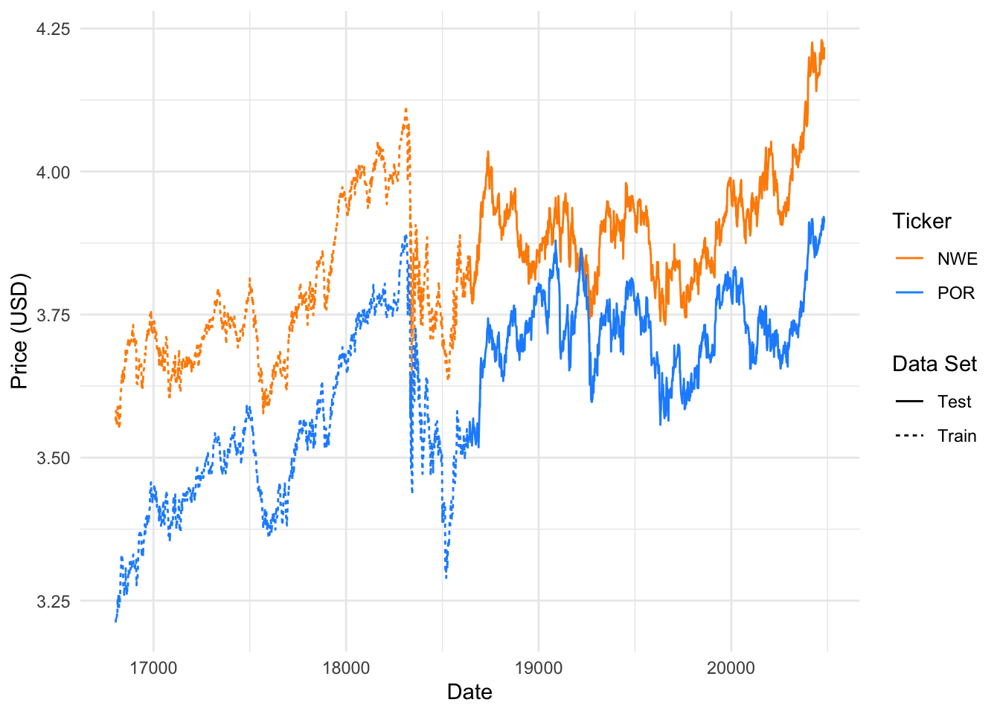
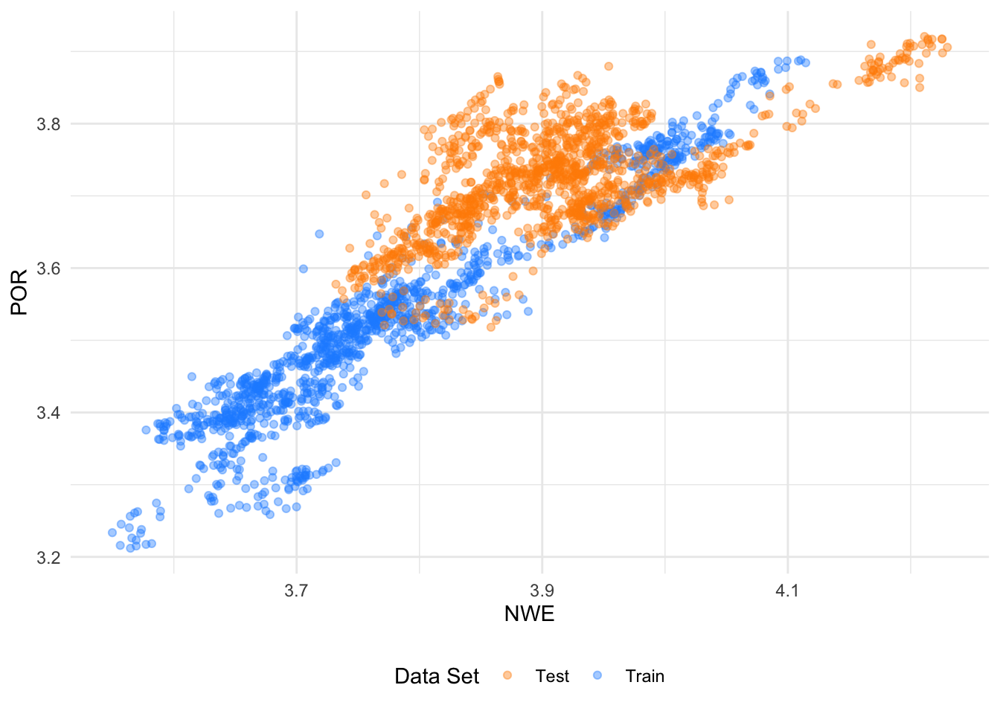
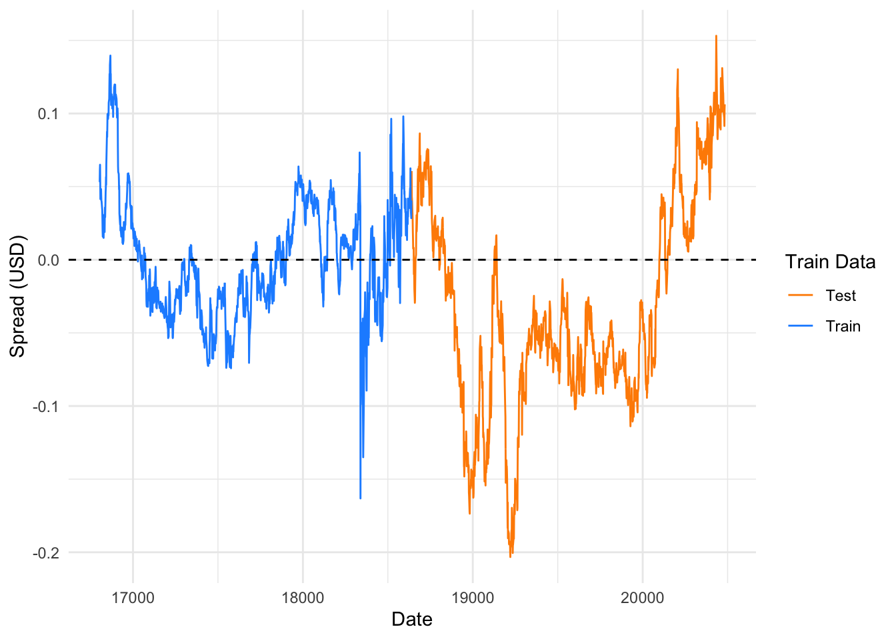
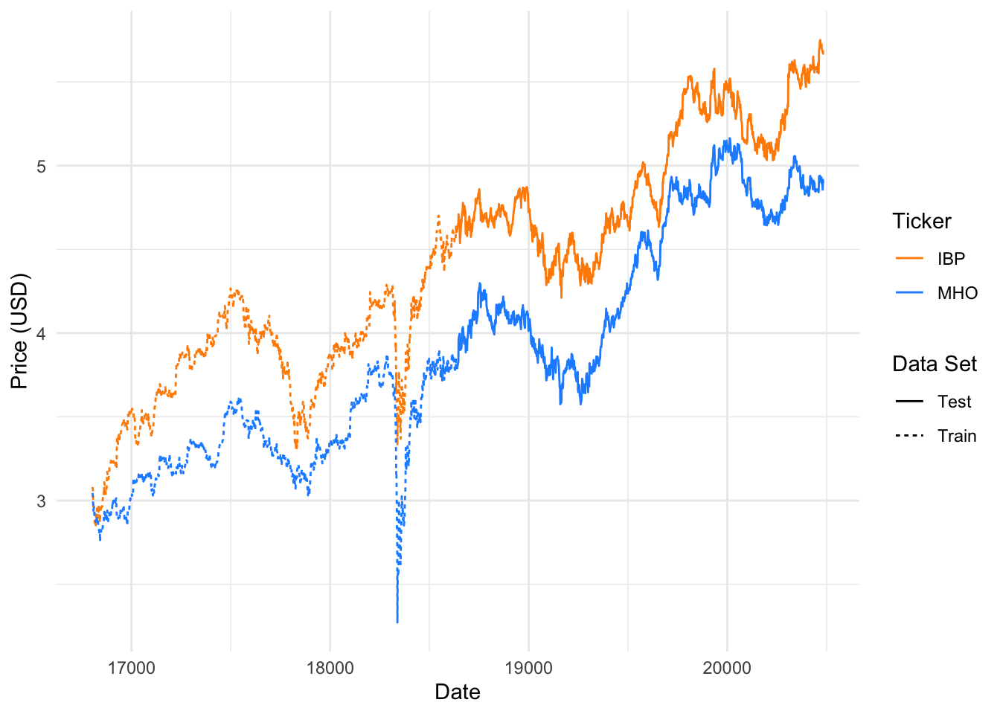
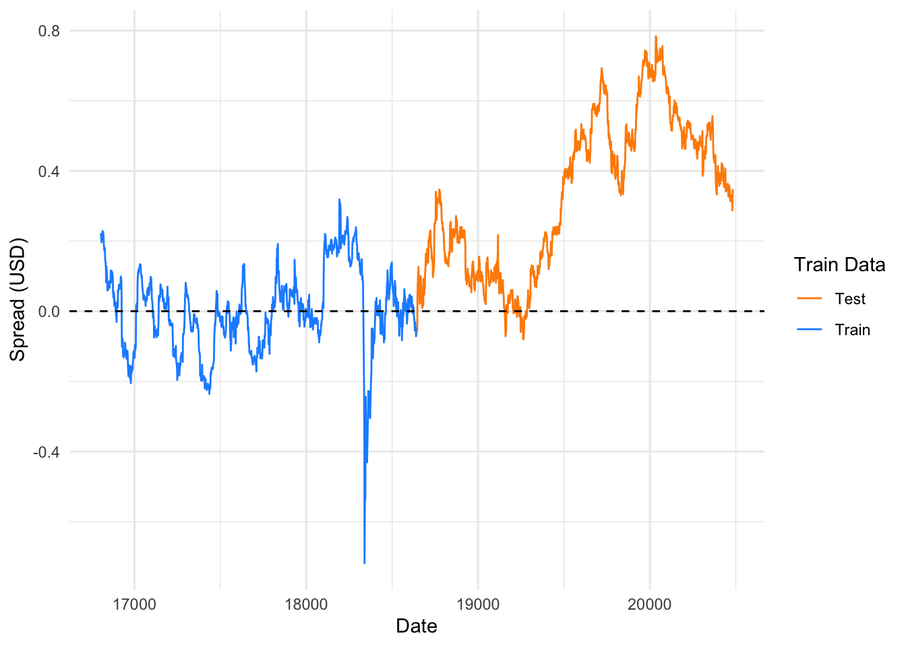
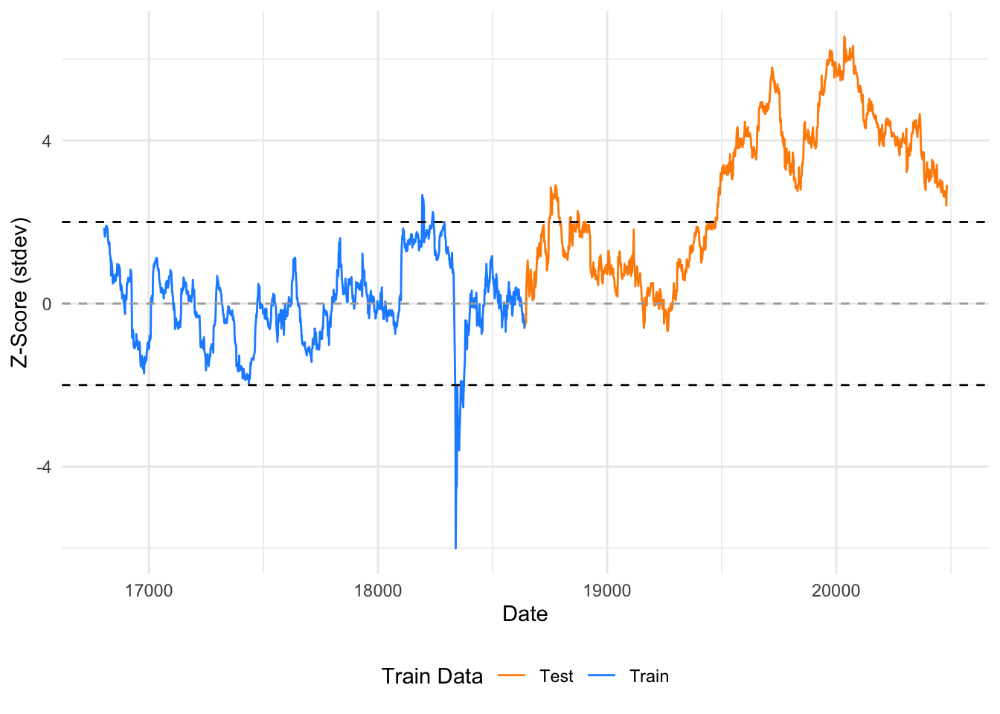
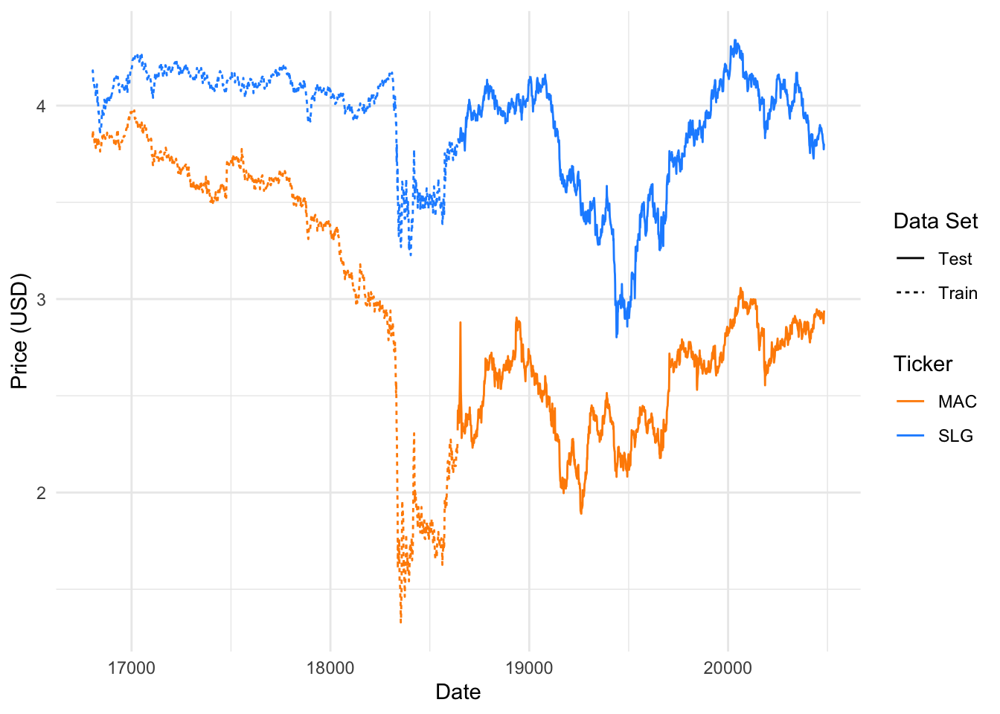
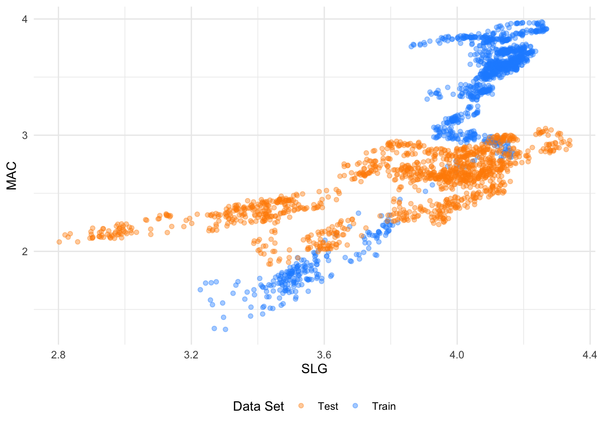
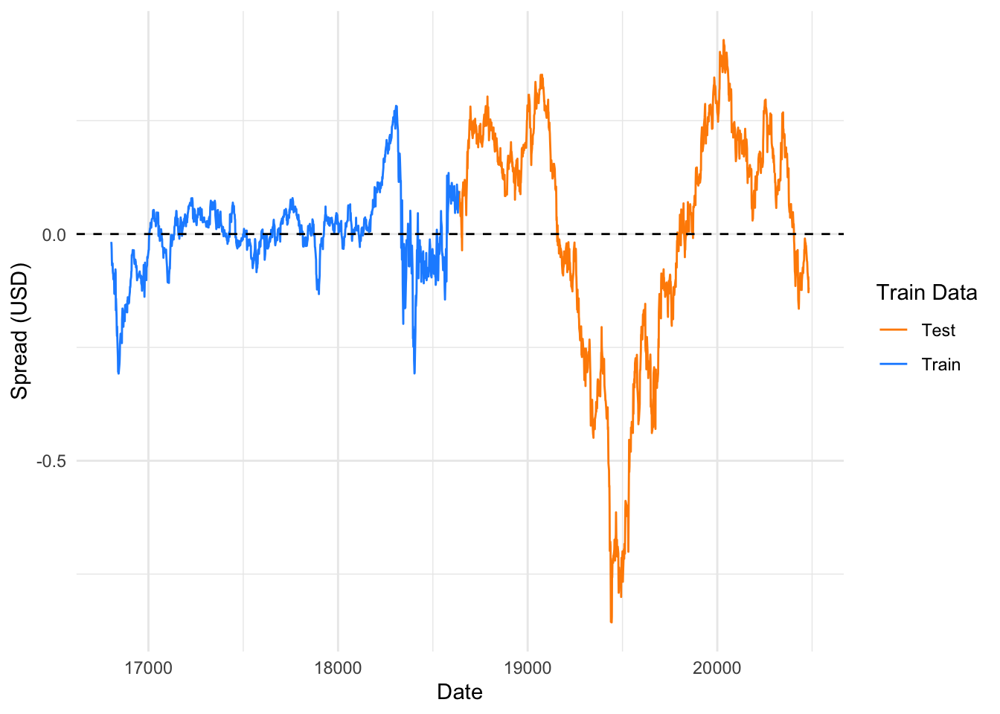

| x | y | coint_pvalue | half_life | zero_cross | pct_outside_2sd | score |
|---|---|---|---|---|---|---|
| NWE | POR | 0.0100000 | 18.68287 | 0.0474308 | 0.0466035 | 0.8471105 |
| SLG | MAC | 0.0121665 | 25.49511 | 0.0561265 | 0.0758294 | 0.8462755 |
| CATY | HWC | 0.0100000 | 19.69836 | 0.0490119 | 0.0308057 | 0.8402455 |
| HP | RIG | 0.0100000 | 23.56871 | 0.0474308 | 0.0497630 | 0.8371613 |
| ASB | HWC | 0.0100000 | 28.48705 | 0.0545455 | 0.0505529 | 0.8240869 |
| WHD | AROC | 0.0100000 | 12.88370 | 0.0788043 | 0.0217096 | 0.8193453 |
| WHD | MUR | 0.0190183 | 20.31691 | 0.0638587 | 0.0502035 | 0.7854505 |
| WHD | LBRT | 0.0155545 | 19.78825 | 0.0692935 | 0.0257802 | 0.7847634 |
| ACA | ESE | 0.0100000 | 13.44216 | 0.0619308 | 0.0236364 | 0.7778297 |
| HP | MUR | 0.0100050 | 36.30073 | 0.0513834 | 0.0576619 | 0.7706782 |
| MHO | IBP | 0.0100000 | 33.96137 | 0.0608696 | 0.0308057 | 0.7601297 |
| NHI | RHP | 0.0100000 | 28.72155 | 0.0490119 | 0.0410742 | 0.7469691 |
| NWE | BKH | 0.0176518 | 28.37077 | 0.0616601 | 0.0568720 | 0.7457139 |
| FELE | WTS | 0.0179630 | 25.40347 | 0.0577075 | 0.0442338 | 0.7360327 |
| MUR | RIG | 0.0173514 | 33.94921 | 0.0671937 | 0.0568720 | 0.7230847 |
| HP | WHD | 0.0100000 | 34.75352 | 0.0421196 | 0.0461330 | 0.7093641 |
| ZWS | WTS | 0.0196690 | 26.42704 | 0.0537549 | 0.0363349 | 0.6803672 |
| TMHC | IBP | 0.0126774 | 39.01908 | 0.0592885 | 0.0363349 | 0.6771416 |
| NHI | CTRE | 0.0100000 | 36.19026 | 0.0347826 | 0.0442338 | 0.6675274 |
| FELE | ZWS | 0.0167806 | 28.76564 | 0.0395257 | 0.0481833 | 0.6659080 |
| OGS | SR | 0.0100000 | 60.76330 | 0.0434783 | 0.0631912 | 0.6492619 |
| NHI | SBRA | 0.0100000 | 47.80517 | 0.0387352 | 0.0505529 | 0.6373978 |
| CATY | ASB | 0.0100000 | 38.17759 | 0.0276680 | 0.0134281 | 0.6256674 |
| MWA | ENS | 0.0218357 | 35.78825 | 0.0434783 | 0.0371248 | 0.5263338 |
| CATY | VLY | 0.0766411 | 34.73599 | 0.0561265 | 0.0505529 | 0.4312573 |
| SR | POR | 0.0400616 | 32.64992 | 0.0284585 | 0.0229068 | 0.4256772 |
| SLG | SKT | 0.0637475 | 34.25543 | 0.0347826 | 0.0616114 | 0.4131215 |
| SBRA | RHP | 0.0473032 | 41.55675 | 0.0505929 | 0.0537125 | 0.4130151 |
| FULT | ASB | 0.0540782 | 45.50663 | 0.0474308 | 0.0355450 | 0.3863550 |
| OGS | TXNM | 0.0999563 | 46.38068 | 0.0695652 | 0.0592417 | 0.3798574 |
| AEO | URBN | 0.0648587 | 53.96487 | 0.0521739 | 0.0576619 | 0.3531545 |
| KBH | IBP | 0.0581278 | 45.07792 | 0.0426877 | 0.0189573 | 0.3346813 |
| GPI | ABG | 0.0944825 | 42.46309 | 0.0553360 | 0.0410742 | 0.3253769 |
| NWE | SR | 0.0930485 | 41.13884 | 0.0363636 | 0.0458136 | 0.2850712 |
| FULT | VLY | 0.0699648 | 57.73031 | 0.0316206 | 0.0497630 | 0.2717592 |
| CDP | NHI | 0.0887642 | 57.26630 | 0.0521739 | 0.0600316 | 0.2427159 |
| MHO | PATK | 0.0552816 | 75.12931 | 0.0395257 | 0.0505529 | 0.2382294 |
| SBRA | CTRE | 0.0909055 | 57.54684 | 0.0268775 | 0.0347551 | 0.1014386 |
Equity Pairs Selection in the Russell 2000
A Stability-Focused, Industry-Constrained Statistical Arbitrage Pipeline
1 Motivation and Objective
Pairs trading strategies rely on identifying asset pairs whose relative price dynamics are stable and mean-reverting. In practice, many statistically appealing pairs fail out-of-sample due to regime shifts, structural breaks, or spurious correlations.
The objective of this analysis is to construct a robust pair selection pipeline for U.S. equities that:
- Emphasizes economic coherence via industry constraints
- Separates candidate generation from statistical validation
- Explicitly evaluates out-of-sample stability
- Prioritizes tradability, not just statistical significance
The focus is deliberately on pair selection, rather than signal generation, execution, or portfolio construction.
2 Data and Universe Construction
2.1 Equity Universe
The starting universe consists of equities from the Russell 2000, representing small-capitalization U.S. stocks.
To improve robustness and realism, the universe is filtered to remove:
- Securities with insufficient price history
- Illiquid or irregularly traded names
- Symbols with missing or inconsistent adjusted prices
All prices are transformed to log adjusted close prices to stabilize variance and allow linear modeling.
2.2 Industry Classification
Each security is assigned to an industry classification (e.g., GICS). All pair construction and evaluation is performed within industry groups only. This constraint:
- Eliminates spurious cross-industry relationships
- Enforces economic interpretability
- Aligns with how relative-value equity strategies are typically deployed
3 Train/test Split
To explicitly evaluate stability, the sample is split into:
- Training period: used for estimation and selection
- Test period (~5 years): used only for validation
All model estimation (hedge ratios, cointegration tests, half-life estimation) is performed only on the training window unless explicitly stated otherwise. No information from the test window is used during candidate generation.
4 Candidate Pair Generation
4.1 Return Correlation as Pre-Screen
Candidate pairs are generated using return correlations, computed over the training period. Return correlation is used only to reduce the combinatorial search space, not as evidence of mean reversion.
For each stock:
- Correlations are computed against peers within the same industry
- Top-N most correlated neighbors are retained
This produces a tractable, economically coherent candidate set while avoiding arbitrary clustering assumptions.
4.2 Refinement of Pairs
After de-duplication of symmetric pairs, the result is a long-form table of candidate pairs which serves as the baseline pair set to all subsequent statistical analysis.
5 Pair Diagnostics and Metrics
Each candidate pair is evaluated using a consistent set of diagnostics designed to capture long-run relationship strength, mean-reversion dynamics, and practical tradability. Metrics are computed primarily on the training window, with selected diagnostics recomputed out-of-sample for validation.
5.1 Hedge Ratio Estimation
For each candidate pair, a hedge ratio is estimated using ordinary least squares on log prices over the training window:
\[ \log P_x = \alpha + \beta \log P_y + \varepsilon_t \]
For each candidate pair, a hedge ratio is estimated using ordinary least squares on log prices over the training window:
\[ s_t = \log P_x - \left(\alpha + \beta \log P_y\right) \]
This spread represents the relative mispricing between the two securities under the assumed linear relationship.
In addition to the hedge ratio itself, several fit-quality diagnostics are retained, including the regression R^2 and residual volatility. These metrics help distinguish tightly linked pairs from relationships that are statistically significant but economically loose.
5.2 Cointegration Testing
Evidence of a stable long-run equilibrium relationship is assessed using an Augmented Dickey–Fuller (ADF) test applied to the training-period spread.
\[ \Delta s_t = \gamma s_{t-1} + \sum_{i=1}^{k} \phi_i \Delta s_{t-i} + \epsilon_t \]
\[ \gamma < 0 \]
The ADF test evaluates whether the spread is stationary, providing a necessary (but not sufficient) condition for mean reversion. For each pair, both the ADF test statistic and p-value are recorded.
Cointegration is treated as an initial screening signal, not a final decision rule. Many cointegrated pairs exhibit impractically slow or unstable dynamics and are filtered later through additional diagnostics.
5.3 Mean Reversion Speed
To quantify the speed of mean reversion, the training-period spread is approximated using an AR(1) process:
\[ s_t = \rho s_{t-1} + \epsilon_t \]
The implied half-life of mean reversion is computed as:
\[ \text{Half-life} = -\frac{\log 2}{\log \rho} \]
Half-life provides a direct, interpretable measure of how quickly deviations from equilibrium decay. Pairs with extremely long half-lives are penalized, as they imply slow convergence and extended holding periods, while extremely short half-lives are treated cautiously as potential noise-driven artifacts.
5.4 Tradability Proxies
Statistical validity alone is insufficient for practical deployment. Several additional diagnostics are included to proxy real trading behavior:
- Spread volatility (standard deviation and interquartile range)
- Zero-crossing frequency, measuring how often the spread crosses its mean
- Excursion frequency, defined as the proportion of time the spread deviates beyond ±2 standard deviations
These measures help identify spreads that are both active and stable, filtering out relationships that are statistically stationary but rarely generate actionable deviations.
6 Out-of-Sample Validation
To assess robustness, key diagnostics are recomputed on a held-out five-year test window, including:
- Cointegration p-values
- Mean-reversion half-life
Rather than enforcing strict pass/fail rules, out-of-sample behavior is incorporated as a stability signal. Pairs that retain cointegration and similar mean-reversion characteristics out-of-sample are rewarded, while pairs exhibiting large regime-dependent shifts are penalized.
This approach balances robustness with flexibility, avoiding excessive reliance on any single test while still discouraging overfit relationships.
7 Pair Ranking Framework
Candidate pairs are ranked using a composite scoring framework that combines:
- Training-period cointegration strength
- Out-of-sample cointegration confirmation
- Mean-reversion speed
- Stability of dynamics across regimes
- Tradability proxies such as zero-crossings and spread excursions
Each component is normalized within the candidate set and combined using a weighted average. Hard thresholds are applied sparingly to remove clearly unsuitable pairs, while most decisions are handled through continuous scoring to avoid brittle cutoff effects.
The resulting ranked list emphasizes stability, interpretability, and practical relevance rather than in-sample optimization.
8 Example Pairs
8.1 NWE vs. POR




8.2 MHO vs. IBP




8.3 SLG vs. MAC




9 Summary and Next Steps
This analysis presents a disciplined approach to equity pair selection that prioritizes robustness over complexity. By combining industry constraints, lightweight pre-screening, rigorous statistical diagnostics, and explicit out-of-sample validation, the resulting pairs are better aligned with real-world statistical arbitrage constraints.
Future extensions could include rolling-window persistence metrics, hedge ratio stability diagnostics, or integration with execution-aware backtesting frameworks.
10 Limitations
This work focuses intentionally on pair selection rather than full strategy backtesting or deployment. Several important considerations are therefore out of scope:
Transaction costs and market impact: The analysis does not model bid–ask spreads, slippage, or borrow costs, all of which can materially affect realized performance for small-cap equities.
Execution and signal design: While spreads and z-scores are computed for diagnostics, the report does not define entry/exit rules, position sizing, or portfolio constraints.
Structural breaks: Cointegration and half-life are evaluated on fixed train/test windows, but real-world relationships may shift within regimes. A rolling persistence study would provide a stronger view of temporal stability.
Survivorship and data quality risks: Results depend on the completeness and correctness of the Russell 2000 membership and price data. Corporate actions, symbol changes, and missing observations can bias estimates if not carefully controlled.
Multiple hypothesis testing: Screening many candidate pairs increases the chance of false positives. Out-of-sample evaluation mitigates this risk but does not eliminate it.